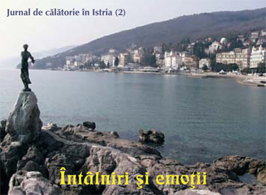
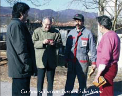
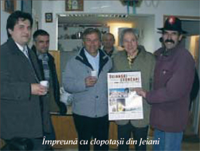
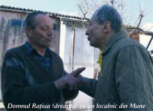

 După un drum de aproape 10 ore – care putea să fie și mai scurt dacă am fi avut mai multă încredere în indicatoare decât în harta turistică – am ajuns la Opatija. Frânți de oboseală, într-un oraș necunoscut, noaptea, fără cazare, nici nu știam încotro s-o luăm. Parcând mașina în centrul orășelului, jos, pe malul Mării Adriatice, ne-am gândit că cel mai bine ar fi, înainte de toate, să coborâm la mal și să respirăm un pic de aer sărat, și în liniștea serii să așteptăm să ne vină "în ajutor" vreo idee bună. Sau altceva, altcineva... Doar câțiva oameni se plimbau pe acea alee, când dintr-odată mi s-a părut că aud vorbă românească: "Da, am înțeles...," spunea un domn pe care-l vedeam numai din spate, vorbind la un telefon public din stradă. știu, nu-i frumos să tragi cu urechea, dar nu m-am putut stăpâni. "Auzi, Adrian, domnul acela vorbește românește!," l-am tras de mânecă ca un copil pe prietenul meu. "Poate vorbește în italiană și ți s-a părut ție...," a fost răspunsul nu prea convingător. Crezând că nu ne vede nimeni cum ne apropiem tot mai mult de cabina de telefon, am continuat să ascultăm discuția, pe care când o înțelegeam, când ba. După numai câteva secunde, prietenul meu și-a dat seama că omul de la telefon care vorbește când dacoromâna, când istroromâna, nu poate fi altcineva decât cel care ne-a invitat pe noi aici, domnul dr. Emil Petru Rațiu, președintele Asociației Culturale Istroromâne "Andrei Glavina," cu care am convenit asupra călătoriei, dar n-am stabilit nici locul, nici ora întâlnirii și pe care până atunci nu-l cunoșteam personal. De la acel moment, din niște turiști rătăciți am devenit dintr-odată stăpâni pe situația în care ne aflam. Începând din acea seară, în toate cele cinci zile cât am stat în Croația, făcând cunoștință cu situația actuală a istroromânilor, n-am încetat să-i punem întrebări acestui bun cunoscător al acestui neam. Domnul Rațiu, care s-a mutat din România de mai bine de 30 de ani, ne-a vorbit și despre emoțiile primei întâlniri cu această ramură occidentală a neamului românesc.
 – Când m-am întâlnit prima dată cu istroromânii așa a fost parcă s-ar fi produs o cădere, o falie în timp. Eu mă găseam pe un deal, la Bărdo, într-un sat aproape cu totul părăsit, lângă Sușnievița, în care mai trăiau doar doi bătrâni. (Spun că trăiau, pentru că tocmai ieri am auzit că Emilian Marmilici a murit acum vreo două săptămâni.) Deci, eu am ajuns în satul acela împreună cu un prieten. Ni se părea că nu este acolo nimeni, și deodată aud niște voci puternice de femei, care vorbeau o limbă care putea părea stranie auzului meu, nefiind prea obișnuit încă cu acest dialect. Frumusețea locului, zona complet izolată, atmosfera de acolo și o limbă care părea românească, cu niște sunete care ți se păreau că vin de dincolo de timp, o limbă arhaică românească de vreo 800 de ani – toate acestea m-au impresionat atât de mult, încât simt și acum emoția acelor clipe. M-a cuprins și peisajul în care este Sușnievița, pentru că m-am simțit parcă aș fi în Carpații românești, în țara Hațegului sau în țara Bârsei. Mi s-a părut dintr-odată că m-am întors în România, îmi părea că sunt acasă...
 – Vizitând acum împreună aceste sate, Jeianiul și Sușnievița, mi s-a părut că aveți aici foarte mulți cunoscuți, chiar prieteni. Cum ați reușit să vă apropiați de acești oameni? Care a fost reacția lor când au auzit că vorbiți aproape ca ei?
– Dialectul lor l-am învățat după ce am venit la ei. M-am pregătit să vorbesc cât mai bine, bineînțeles, cu trecerea anilor m-am descurcat tot mai ușor. Cel mai mare premiu însă pe care l-am primit a fost acum vreo doi ani, la Jeiani, când, la o familie unde mă aflam, au venit niște rude ale acestora și când m-au văzut, așa cum au obiceiul când văd un străin, mi s-au adresat în croată. Dar eu le-am răspuns: "bură seara!" Imediat m-au întrebat "de unde ste?" Din Sușnievița sunteți? Deci, m-au confundat cu unul de-al lor. Aceasta a fost cea mai mare notă de confirmare pentru mine. Da, așa cum bine ați sesizat, oamenii de aici îmi sunt mai mult decât cunoștințe, mulți dintre ei chiar prieteni. Cred că ei au recepționat de la bun început acea dragoste sinceră cu care eu m-am apropiat de ei. Poate exagerez un pic, dar m-au acceptat aproape ca și pe unul de-al lor.
 Domnul Rațiu ne-a spus înainte de a vizita satele de istroromâni că toți cei care vor să aibă legături cu acest neam, trebuie să fie foarte atenți la felul cum se apropie de ei, să le acorde toată atenția, dragostea și sinceritatea. Dovadă că aceasta este cheia succesului, e că peste tot pe unde am umblat, oamenii ne-au primit cu inimile deschise, invitându-ne chiar în casele lor. Domnul Rațiu, care editează singura revistă în dialect istroromân "Scrisore către fraț Rumer," cunoaște familii și rudenii întregi din cele circa zece sate de pe ambele părți ale Muntelui Mare (Monte Maggiore). Prin domnia sa am avut parte și noi de numeroase momente impresionante: să cunoaștem mai multe generații din câte o familie, să știm cine cui îi este neam sau vecin, să aflăm că fratele unui membru al trupei de clopotași din Jeiani este grav bolnav, fiind internat la spital, să ne bucurăm de succesele copiilor care scriu poezioare în dialect, să auzim că nepotul lui Andrei Glavina, care încă nu este însurat, ar vrea să vină în România după soție... și a fost la fel de emoționant să auzi că la despărțire îți zic tradiționalul lor "Domnu cu voi"...
Eva Iova
March 21, 2003
© 2003 Foaia Românească